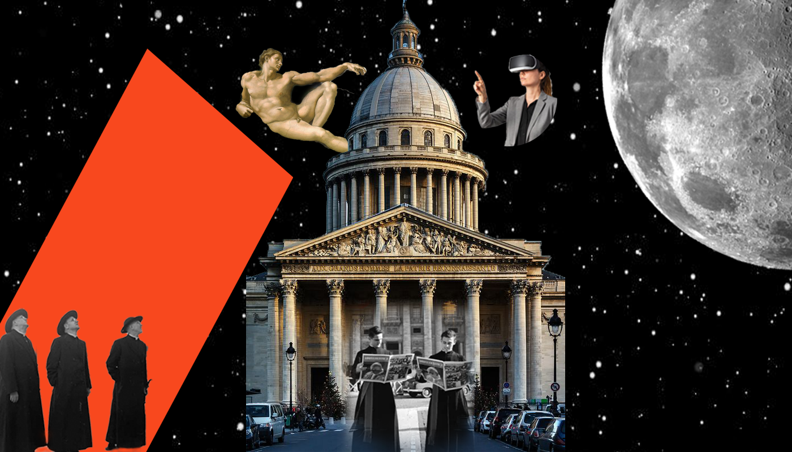
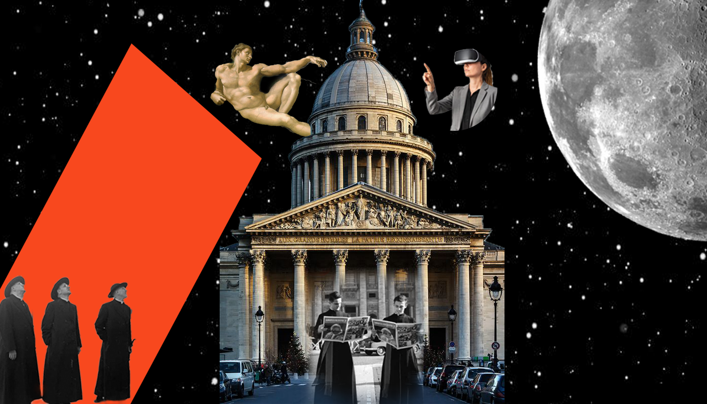
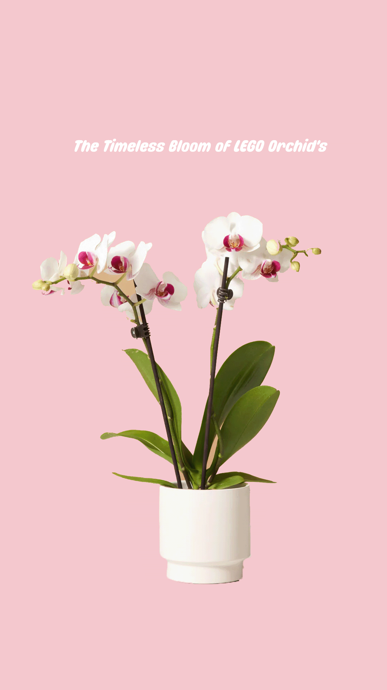
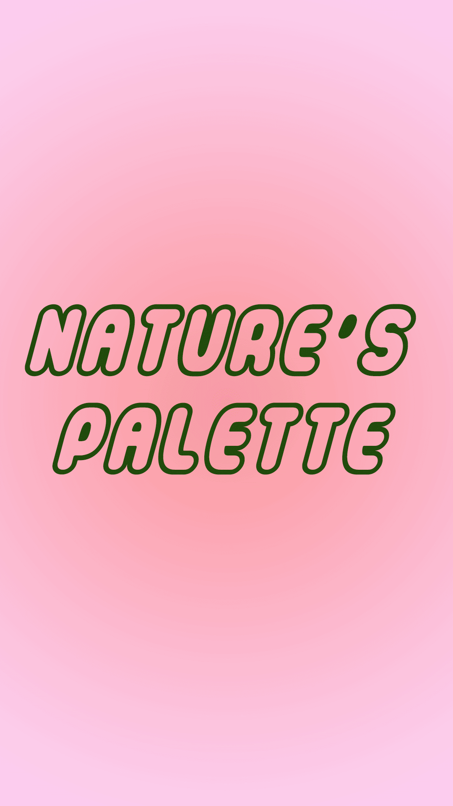
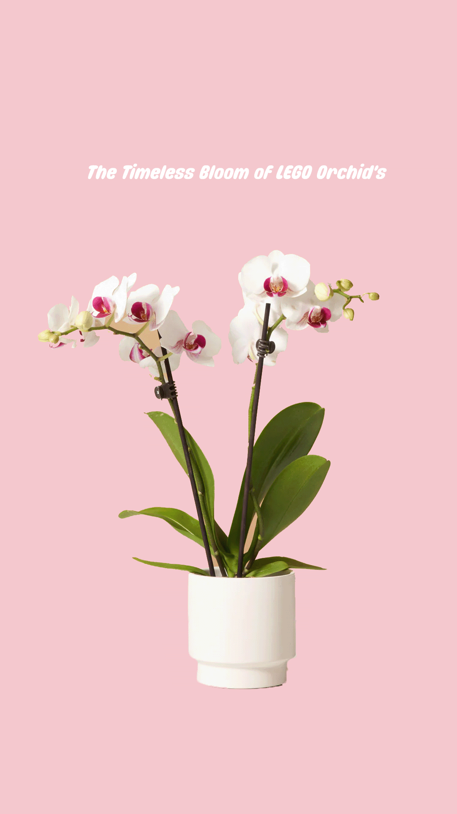
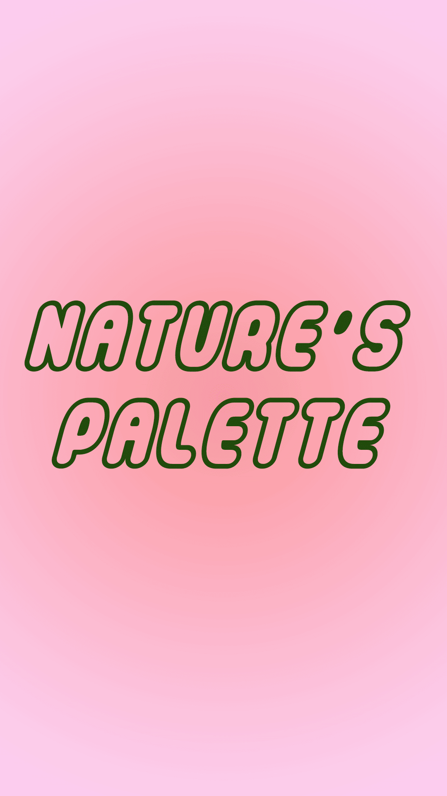

ეს არის ჩემი პოსტერების სერია, რომელიც მნახველს აძლევს საშუალებას იმოგზაუროს ძველ დროში. ჩვენი მიზანი იყო ძველი და ახალი დროის სინთეზი და ვფქირობ კარგად გავართი თავი ამ დავალებას.

 

ეს არის ჩემი პოსტერების სერია, რომელიც მნახველს აძლევს საშუალებას იმოგზაუროს ძველ დროში. ჩვენი მიზანი იყო ძველი და ახალი დროის სინთეზი და ვფქირობ კარგად გავართი თავი ამ დავალებას.
 



ლეგოს ყვავილები ყველა გოგოსთვის საოცნებო საჩუქარია. მეც იმათაგან ერთ-ერთი ვარ, ვინც გიჟდება ამ სამუდამო ყვავილებზე და კოლექციაც აქვს მისი. ამიტომ გადავწყვიტე ჩემი პროექტი ყოფილი მინიმალისტური, თუმცა ლამაზი.


კურსის განმავლოაბში შევქმენი უამრავი ნამუშევარი, რომელიც სხვადსხვა მნიშვნელობის მატარებელია, იქნება ეს საარჩევნო კამპანია, ღვინის ექსპორტზე გატანა თუ ა.შ.